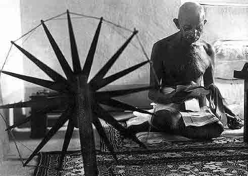

|
|
MOHANDAS GANDHI 1869-1948

Sesudah Cina, Indialah negeri yang penduduknya terbanyak
di dunia, bagaikan bintang-kemintang yang berserakkan di
langit lazuardi. Dan bangsa yang begini besar di suatu saat
hidup berkaparan di bawah pijakan sepatu lars Inggris yang
sambil isap cerutu melecut punggung India dan merampok
kekayaan buminya. Bukankah Engels ada menyindir: "Jika
Inggris menyebut-nyebut demi Yesus Kristus di India, yang
dia maksudkan sebetulnya kapas!"
Mohandas K. Gandhi seorang yang berdiri paling depan
dalam gerakan untuk kemerdekaan India, dan hanya dari sudut
alasan ini saja banyak orang yang mengusulkan agar dia
dimasukkan ke dalam bagian pokok isi buku ini. Walau
bagaimana, patutlah diingat, kemerdekaan India dari Inggris
akan datang dengan "sendirinya" cepat atau lambat. Sebab,
nyatanya kekuatan tertentu dari dorongan sejarah cenderung
mengarah ke dekolonisasi. Ini dapat kita saksikan sekarang
bahwa kemerdekaan India sudah pasti terlaksana dalam
beberapa tahun sesudah tahun 1947 bahkan andaikata Gandhi
tak pernah hidup di dunia ini.
Memang betul, cara Gandhi menjalankan pembangkangan
sosial tanpa kekerasan akhirnya berhasil "membujuk Inggris
angkat kaki" dari negeri itu. Tetapi, kalaulah jalan
kekerasan yang ditempuh, tak urung dia toh akan bebas
merdeka juga, cepat atau lambat. Karena susah juga
menyimpulkan apakah Gandhi secara keseluruhan memperlambat
atau mempercepat kebebasan India, tampaknya kita bisa
berkongklusi bahwa akibat-akibat inti dari
langkah-langkahnya adalah (paling tidak dari segi itu) tidak
seberapa besar. Juga bisa ditunjukkan, Gandhi bukanlah
pendiri gerakan kemerdekaan India (Kongres Nasional India
sudah berdiri sejak tahun 1885), dan bukan juga dia yang
merupakan tokoh politik paling penting pada saat kemerdekaan
itu diperoleh.
Meski begitu, arti penting Gandhi terletak pada anjuran
"tanpa kekerasan-"nya. (Tentu saja, gagasan ini tidaklah
sepenuhnya orisinal; Gandhi sendiri secara khusus mengatakan
ide itu berasal sebagian dari bacaannya tulisan-tulisan
Thoreau, Tolstoy dan Perjanjian Baru dan pula pelbagai
tulisan-tulisan pemuka agama Hindu). Tak ragu lagi, politik
Gandhi, andaikata bisa diterima dalam skala internasional,
dapat mengubah dunia. Malangnya, tak semua bisa menerimanya,
bahkan di India sendiri.
Memang betul, di tahun antara 1945-1955 tekniknya
digunakan untuk mencoba membujuk Portugis supaya angkat kaki
dari Goa, anjuran ini tidak memenuhi sasaran karena beberapa
tahun kemudian pemerintah India meringkusnya dengan kekuatan
senjata. Tambahan pula, dalam tiga puluh tahun terakhir,
India terlibat perang tiga kali dengan Pakistan dan perang
perbatasan dengan Cina. Lain-lain negeri juga ogah-ogahan
menerima ajaran Gandhi berikut tekniknya. Secara kasarnya,
tujuh puluh tahun terhitung sejak Gandhi memperkenalkan
teknik "tanpa kekerasan" itu, dunia baku hantam yang penuh
gelimang darah. Baku hantam paling hebat dalam sejarah.
Haruskah kita menyimpulkan bahwa selaku filosof Gandhi
jelas jelas gagal? Pada saat sekarang ini tampaknya memang
begitulah; tetapi, layak diingat bahwa tiga puluh tahun
sesudah tiadanya Nabi Isa, seorang Romawi yang cerdas dan
sarat informasi tak bisa tidak akan berkesimpulan bahwa Nabi
Isa dari Nazareth merupakan suatu "kegagalan" apabila
betul-betul dia mendengarkan dan mengikuti Nabi Isa secara
keseluruhan! Dan pula tak seorang pun bisa membayangkan di
tahun 450 SM betapa akan berpengaruhnya Kong Hu-Cu pada
akhirnya. Menilai sejauh apa yang sudah terjadi, Gandhi
tampaknya layak hanya termasuk dalam kelompok "orang-orang
terhormat."
|